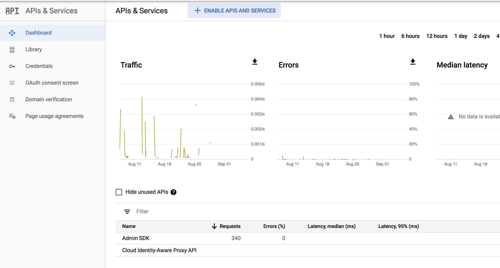
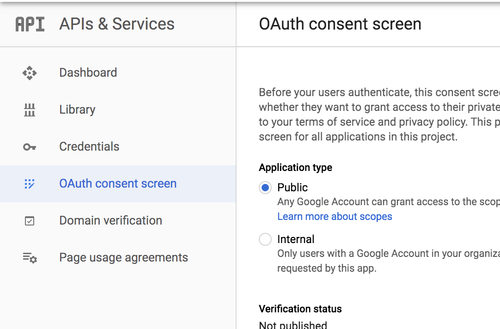
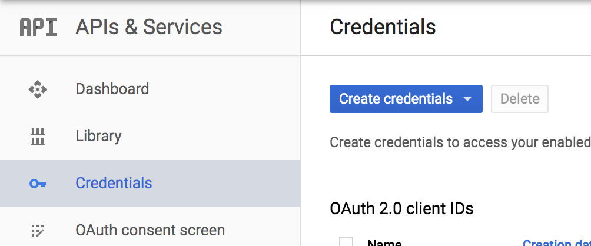
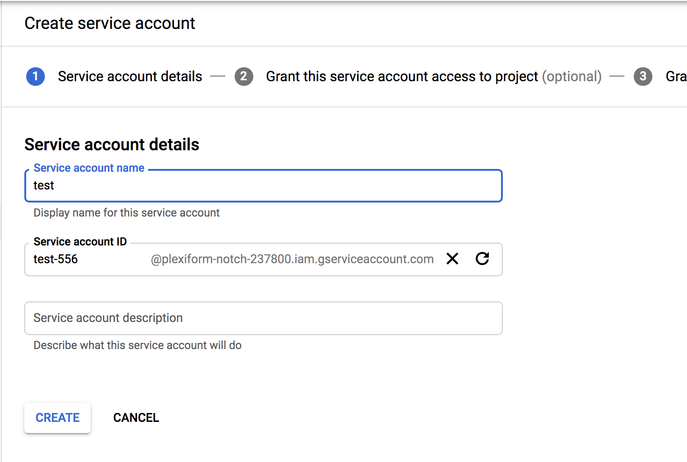
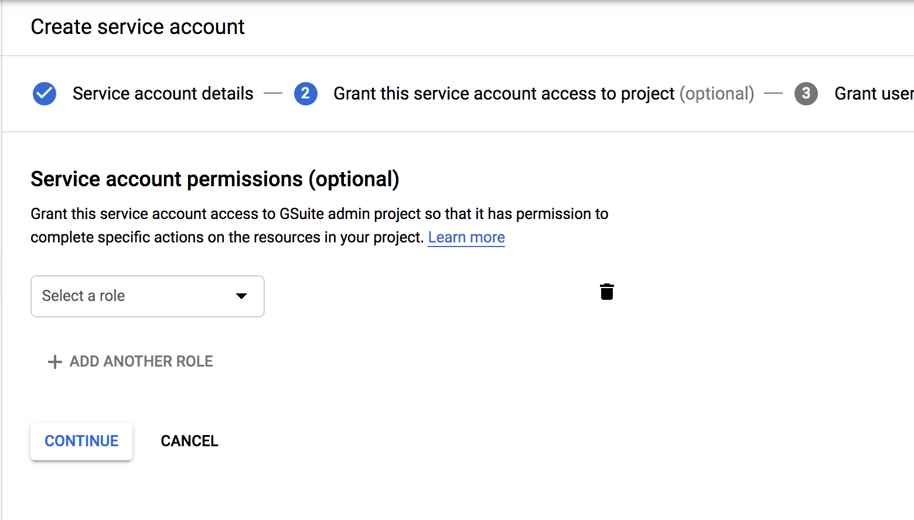
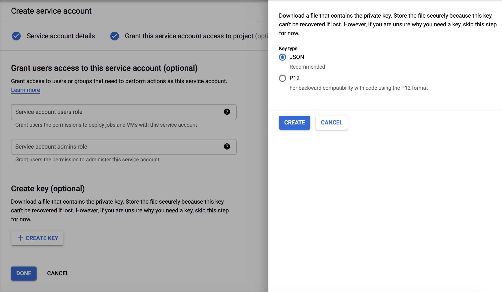
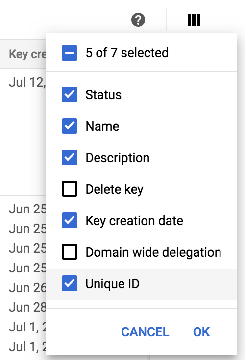

Configurar Google OAuth
Si tu organización utiliza G Suite para la autenticación de usuarios, puedes configurar Rancher para permitir que tus usuarios inicien sesión utilizando sus credenciales de G Suite.
Solo los administradores del dominio de G Suite tienen acceso al Admin SDK. Por lo tanto, solo los administradores de G Suite pueden configurar Google OAuth para Rancher.
Dentro de Rancher, solo los administradores o usuarios con el Gestionar Autenticación rol global pueden configurar la autenticación.
Requisitos previos
-
Debes tener una cuenta de administrador de G Suite configurada.
-
G Suite requiere un nombre de dominio FQDN privado superior como dominio autorizado. Una forma de obtener un FQDN es creando un registro A en Route53 para tu servidor Rancher. No necesitas actualizar la configuración de la URL de tu servidor Rancher con ese registro, porque podría haber clústeres utilizando esa URL.
-
Debes tener habilitada la API del Admin SDK para tu dominio de G Suite. Puedes habilitarla siguiendo los pasos en esta página.
Después de habilitar la API del Admin SDK, la pantalla de API de tu dominio de G Suite debería verse así:

Configurando G Suite para OAuth con Rancher
Antes de poder configurar Google OAuth en Rancher, necesitas iniciar sesión en tu cuenta de G Suite y hacer lo siguiente:
1. Añadiendo Rancher como un Dominio Autorizado
-
Haz clic aquí para ir a la página de credenciales de tu dominio de Google.
-
Selecciona tu proyecto y haz clic en pantalla de consentimiento de OAuth.

-
Ve a Dominios Autorizados e introduce el dominio privado superior de la URL de tu servidor Rancher en la lista. El dominio privado superior es el superdominio más a la derecha. Por ejemplo, para www.foo.co.uk, el dominio privado superior es foo.co.uk. Para más información sobre dominios de nivel superior, consulta este artículo.
-
Ve a Ámbitos para las APIs de Google y asegúrate de que email, perfil y openid están habilitados.
Resultado: Rancher ha sido añadido como un dominio autorizado para la API de Admin SDK.
2. Creando Credenciales OAuth2 para el Servidor Rancher
-
Ve a la consola de API de Google, selecciona tu proyecto y ve a la página de credenciales.

-
En el menú desplegable Crear Credenciales, selecciona ID de cliente OAuth.
-
Haz clic en Aplicación web.
-
Proporciona un nombre.
-
Completa los orígenes de JavaScript autorizados y URIs de redirección autorizados. Nota: La página de la interfaz de usuario de Rancher para configurar Google OAuth (disponible desde la vista Global bajo ) te proporciona los enlaces exactos a introducir para este paso.
-
Bajo orígenes de JavaScript autorizados, introduce la URL de tu servidor Rancher.
-
Bajo URIs de redirección autorizados, introduce la URL de tu servidor Rancher concatenada con la ruta
verify-auth. Por ejemplo, si tu URI eshttps://rancherServer, deberás introducirhttps://rancherServer/verify-auth.
-
-
Haz clic en Crear.
-
Después de que se cree la credencial, verás una pantalla con una lista de tus credenciales. Elige la credencial que acabas de crear y, en esa fila en el lado derecho, haz clic en Descargar JSON. Guarda el archivo para que puedas proporcionar estas credenciales a Rancher.
Resultado: Tus credenciales de OAuth se han creado con éxito.
3. Creando credenciales de cuenta de servicio
Dado que el SDK de Google Admin está disponible solo para administradores, los usuarios regulares no pueden usarlo para recuperar perfiles de otros usuarios o sus grupos. Los usuarios regulares ni siquiera pueden recuperar sus propios grupos.
Dado que Rancher proporciona acceso basado en la membresía de grupos, requerimos que los usuarios puedan obtener sus propios grupos y buscar otros usuarios y grupos cuando sea necesario.
Como solución alternativa para obtener esta capacidad, G Suite recomienda crear una cuenta de servicio y delegar la autoridad de tu dominio de G Suite a esa cuenta de servicio.
En esta sección se describen las operaciones siguientes:
-
Crea una cuenta de servicio
-
Crea una clave para la cuenta de servicio y descarga las credenciales como JSON
-
Haz clic aquí y selecciona tu proyecto para el cual generaste credenciales de OAuth.
-
Haz clic en Crear cuenta de servicio.
-
Introduce un nombre y haz clic en Crear.

-
No proporciones ningún rol en la página Permisos de cuenta de servicio y haz clic en Continuar.

-
Haz clic en Crear clave y selecciona la opción JSON. Descarga el archivo JSON y guárdalo para que puedas proporcionarlo como las credenciales de la cuenta de servicio a Rancher.

-
Resultado: Tu cuenta de servicio ha sido creada.
4. Registra la clave de la cuenta de servicio como un cliente OAuth
Necesitarás otorgar algunos permisos a la cuenta de servicio que creaste en el último paso. Rancher requiere que solo otorgues permisos de solo lectura para usuarios y grupos.
Usando el ID único de la clave de la cuenta de servicio, regístrala como un cliente OAuth siguiendo los siguientes pasos:
-
Obtén el ID único de la clave que acabas de crear. Si no se muestra en la lista de claves justo al lado de la que creaste, tendrás que habilitarlo. Para habilitarlo, haz clic en ID único y haz clic en OK. Esto añadirá una columna de ID único a la lista de claves de cuentas de servicio. Guarda la que aparece para la cuenta de servicio que creaste. NOTA: Esta es una clave numérica, no debe confundirse con el campo alfanumérico ID de clave.

-
Ve a la página Delegación a nivel de dominio.
-
Añade el ID único obtenido en el paso anterior en el campo Nombre del cliente.
-
En el campo Uno o más ámbitos de API, añade los siguientes ámbitos:
openid,profile,email,https://www.googleapis.com/auth/admin.directory.user.readonly,https://www.googleapis.com/auth/admin.directory.group.readonly -
Haz clic en Autorizar.
Resultado: La cuenta de servicio está registrada como un cliente OAuth en tu cuenta de G Suite.
Configurando Google OAuth en Rancher
-
Inicia sesión en Rancher utilizando un usuario local asignado al rol administrador. Este usuario también se llama el principal local.
-
En la esquina superior izquierda, haz clic en ☰ > Usuarios y Autenticación.
-
En el menú de navegación de la izquierda, haz clic en Proveedor de Autenticación.
-
Haz clic en Google. Las instrucciones en la interfaz cubren los pasos para configurar la autenticación con Google OAuth.
-
Correo electrónico del administrador: Proporciona el correo electrónico de una cuenta de administrador de tu configuración de G Suite. Para realizar búsquedas de usuarios y grupos, las APIs de Google requieren el correo electrónico de un administrador junto con la clave de la cuenta de servicio.
-
Dominio: Proporciona el dominio en el que has configurado G Suite. Proporciona el dominio exacto y no ningún alias.
-
Pertenencia a grupos anidados: Marca esta casilla para habilitar la pertenencia a grupos anidados. Los administradores de Rancher pueden desactivar esto en cualquier momento después de configurar la autenticación.
-
Paso Uno trata sobre añadir Rancher como un dominio autorizado, lo cual ya cubrimos en esta sección.
-
Para Paso Dos, proporciona el JSON de credenciales OAuth que descargaste después de completar esta sección. Puedes subir el archivo o pegar el contenido en el campo Credenciales OAuth.
-
Para Paso Tres, proporciona el JSON de credenciales de la cuenta de servicio que descargaste al final de esta sección. Las credenciales solo funcionarán si has registrado la clave de la cuenta de servicio como un cliente OAuth en tu cuenta de G Suite.
-
-
-
Haz clic en Autenticar con Google.
-
Haz clic en Habilitar.
Resultado: La autenticación de Google se ha configurado correctamente.